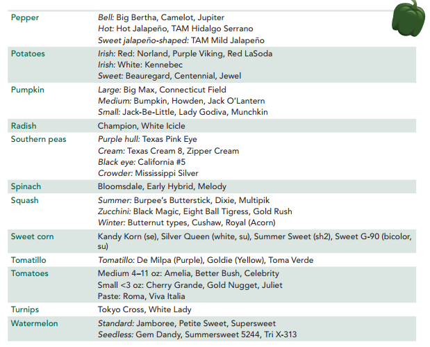

What to plant
Pay special attention to:
• calories
• protein
• fats
• winter storage crops
• quantity of food for the number of people you want to feed
• square footage or acreage required
• sustainability
• composting
• seed saving (only open-pollinated or heirloom varieties)
• appropriate varieties for climate, length of growing season, and storage ability
• food preservation
• quality tools
• pest control measures
In a survival situation we are concerned with keeping weight on, not losing it. The best choices for calorie-dense crops that also store well (through the “hunger gap” that happens between harvest seasons) are:
• potatoes
• winter squash
• corn
• beans
• sunflower seeds
• soybeans
• cruciferous vegetables (cabbage, kale, broccoli)
• beets
• carrots
• leeks
• onions
• rutabagas
• turnips
Plant only open pollinated, heirloom varieties so that you can continue planting year after year

